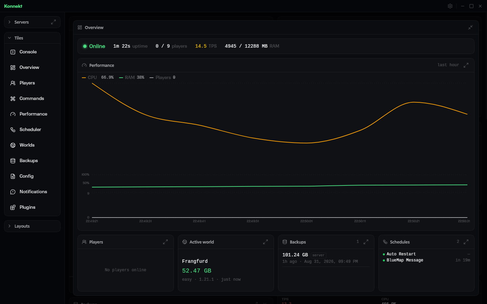

[i] about
One suite. Two tools. One set of rules.
Kollektiv is a small suite of tools for Minecraft: Java Edition. Konnekt runs the server; Kommands writes the commands. They are separate apps with separate releases, built to the same design and held to the same rules.
The name also belongs to the repository that holds what the two share: the design tokens every colour, size and duration comes from, the conventions each repo follows, and the tooling that checks both keep to them. It owns nothing else. Builds, CI and releases stay with each product.
[≡] how it's built
Written once, checked everywhere
One source for design values
Every colour, size and duration in both apps comes from a single tokens file in the Kollektiv repository. The products vendor it and generate their own styles from it, so no value is defined twice. This page is styled from the same file.
Syntax checked against pinned data
Minecraft command syntax changes between versions in ways that look right and silently do nothing. Game values come from data pinned per version, and the differences between versions are traits, not comparisons of version numbers.
Independent products
Konnekt is a Go module with a tag-driven release. Kommands derives its command data from pinned snapshots. There is no monorepo: each keeps the build and release pipeline that already works.
Checked, not just documented
Each repo carries a manifest naming its checks and the invariants a linter cannot express. A check that could not run is reported as skipped, never as passed.
[↓] get the tools
Both are open source
-
Konnekt
AlphaDesktop app for Windows and Linux. Runs on your own machine, against server folders you already have.
-
Kommands
In developmentWeb app and, from the same code, a standalone desktop app that works offline and can hand commands to Konnekt. The web build is not deployed yet; run it from source.